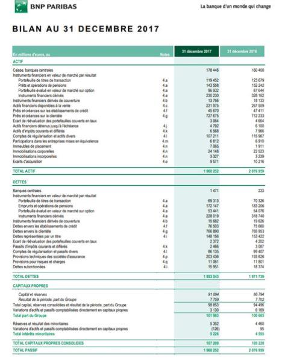
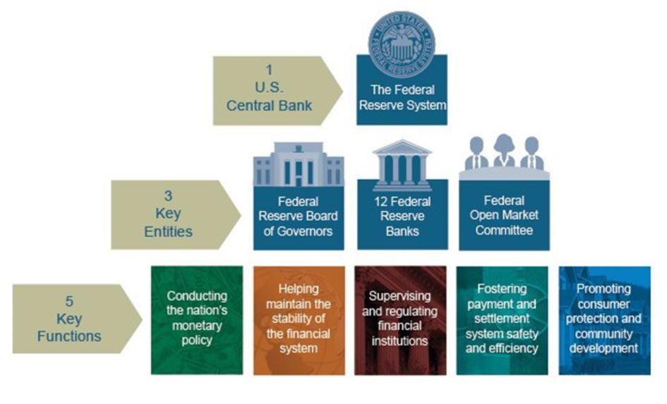
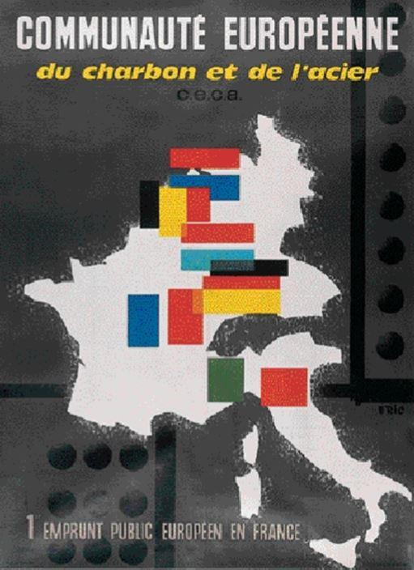

Je remercie les organisateurs de ce colloque de m’avoir invitée à discourir sur la question des banques centrales. Bien qu’étant éminemment de nature géopolitique, la question des banques centrales est un sujet trop peu souvent abordé eu égard à ses enjeux ; car cette question est à l’origine d’un nombre considérable de désordres politiques, économiques, sociaux et militaires.
ANALYSE DU CONCEPT DE « BANQUE CENTRALE »
Banque centrale de RussieCaroll Quigley a justement présenté les choses de la façon suivante :
« Les puissances du capitalisme financier (1850-1932) avaient un plan de grande envergure, rien de moins que de créer un système mondial de contrôle financier dans les mains du secteur privé capable de dominer le système politique de chaque pays et l’économie mondiale d’un seul tenant. »
Je voudrais préciser que Caroll Quigley, titulaire d’un doctorat d’histoire à l’université d’Harvard, était professeur à l’université de Georgetown, membre de la Walsch School of Foreign Service, ainsi que consultant au département de la Défense des USA, à la Smithsonian institution et au très sélect Commitee on Astronomics and Space Exploration. Il avait été le professeur de l’ancien Président Clinton.
LA BANQUE EST À L’ORIGINE DE LA CRÉATION DES « BANQUES CENTRALES » QUI ONT POUR FONCTION DE CENTRALISER LA GESTION DES MONNAIES
Nous verrons qu’à l’origine de la création du concept de « banque centrale », se trouve une coalition de banquiers privés qui ont suggéré, plus ou moins ouvertement et loyalement, cette « innovation technique » aux différents pouvoirs politiques en place.
Techniquement, une banque est une « entreprise privée » qui prend différentes formes juridiques en fonction de l’État dans lequel elle est implantée. Les grandes banques à implantation internationale sont économiquement contrôlées par des personnes physiques dont le grand public ignore, la plupart du temps, le nom.
Au fil du temps, le système bancaire s’est intégré à différents niveaux.
D’une part, il s’est internationalisé et concentré, chaque grande banque d’affaires opérant par le biais des marchés ou de missions ou étant directement implantées sur le territoire de différents États (HSBC, UBS, Groupe privé de gestion d’actifs Edmond de Rothschild, banque d’affaires Rothschild & Co, BNP Paribas présent sur tous les continents, J-P. Morgan, Deutsche Bank présente ans plus de 75 pays, Goldman Sachs etc.).
D’autre part, il s’est consolidé par zone géographique au moyen des banques centrales.
LA BANQUE EST UNE ENTREPRISE PRIVÉE DE NATURE INTERNATIONALE
La banque est une organisation détenue par des personnes privées qui restent, le plus souvent, anonymes. Dire que la banque est une entreprise privée signifie que la banque a pour mission de mettre en œuvre les intérêts privés de ses propriétaires. De façon structurelle, la banque, en tant qu’entreprise privée, n’a jamais eu pour mission de remplir une fonction, de nature politique, concernant l’intérêt commun. Les choses doivent être, à cet égard, parfaitement claires.
Aujourd’hui, les banques sont organisées en groupes d’entreprises, bancaires et financières, qui forment un nuage capitalistique ; les plus importantes d’entre elles sont implantées ou travaillent dans la plupart des pays du monde.
L’organisation des multinationales sous forme de groupes, autrement dit de constellations capitalistiques, est un moyen essentiel, « capital », pour rendre anonymes les véritables détenteurs de capitaux de ces entités tentaculaires. Il est parfois très difficile, même pour des services d’État, de remonter aux associés décisionnaires des groupes d’entreprises en raison du nombre de sociétés, de leur imbrication dans de multiples États et de la multiplicité des formes sociales juridiquement disponibles. Il faut évidemment ajouter à cela que certains États, sous la coupe du droit anglo-saxon, organisent eux-mêmes l’anonymat des détenteurs de capitaux de certaines structures juridiques utilisées à des fins professionnelles, tels les trusts anonymes.
La pratique des groupes d’entreprises permet aux détenteurs actifs des capitaux de prendre, au niveau mondial, un poids économique et politique de plus en plus important tout en restant dans l’ombre, c’est-à-dire à l’abri de toute responsabilité politique.
S’agissant du poids respectif des banques par rapport à celui des États, nous pourrions citer l’exemple de BNP-Paribas dont le bilan officiel (non compris le « hors bilan ») s’élève, pour 2017, à 1960 milliards d’euros1, à comparer avec le PIB de la France pour la même période qui s’élève à 2163 milliards d’euros2.
Néanmoins, les chiffres officiels présentés par les banques concernant leurs revenus d’exploitation ne sont pas significatifs car ils font l’objet de trop nombreuses manipulations liées à l’existence d’une opacité juridique et comptable internationale d’ordre systémique :
La présence de trop nombreuses filiales dans les paradis fiscaux qui ne font pas apparaître les donneurs d’ordre (sur le modèle des trusts anonymes) ;
L’organisation en groupes d’entreprises permettant, via le commerce intra-groupe, l’optimisation fiscale ;
Les manipulations consistant à faire passer une partie des actifs en « hors bilan » ; ainsi que,
La quasi-liberté d’évaluation comptable des actifs (le « fair value », autrement dit « juste prix ») imposée par la comptabilité IFRS qui sévit au niveau international,
ont pour conséquence que les résultats financiers de ces groupes présentés au public n’ont aucune valeur réelle et ne permettent pas de se faire une idée correcte de la véritable puissance capitalistique des conglomérats bancaires.
En outre, il faut garder à l’esprit que le rapport de force entre les banques et les États ne se situent pas seulement au niveau capitalistique, il passe également par :
la participation de certaines banques, par le biais de leur donneur d’ordre effectif, à la détermination des normes comptables (IFRS) et bancaires internationales,
les liens économiques, juridiques et parfois humains qui existent entre les propriétaires de certaines banques et les groupes industriels exploités sous forme de cartel (de façon officielle ou officieuse).
Il faut aussi préciser que ce sont les grandes banques, prioritairement celles opérant à la City, qui ont organisé le réseau des paradis fiscaux fondé sur les trusts anonymes. Ce réseau est juridiquement supervisé par les grandes firmes anglo-saxonnes d’audit et de droit, les fameuses « Big Four ».
Ainsi, les capitaux cachés dans les paradis fiscaux sont sous l’entier contrôle des grandes banques d’affaires internationales. Non seulement ces réseaux opaques servent à collecter tout type d’argent (évasion, optimisation et argent sale) mais surtout ils permettent aux banques qui y siègent d’utiliser cet argent comme bon leur semble, aucune règlementation ne venant entraver leurs « activités ».
LA BANQUE S’EST CONSOLIDÉE PAR ZONE GÉOGRAPHIQUE DANS UN SYSTÈME DE « BANQUES CENTRALES » AFIN DE CENTRALISER LA GESTION DES MONNAIES
Le système établit par les banquiers s’est consolidé au niveau de chaque État, ainsi que par zone géographique, au moyen des banques centrales. Historiquement, sur le territoire de chaque État, les propriétaires des banques privées les plus importantes se sont associés pour créer une « banque centrale ». Il en a résulté que l’affectation des ressources monétaires est devenue un monopole des banquiers privés coalisés au sein d’un système de « banque centrale ».
Les « banques centrales » sont nées sous le signe de l’imposture : présentées comme des banques d’État, elles disposaient à ce titre de la garantie de l’État – c’est-à-dire des contribuables de l’État – alors que ses capitaux restaient dans des mains privées. Les banques centrales ont le monopole de l’affectation des ressources monétaires. Dans la mesure où ce monopole est détenu par des intérêts privés, la monnaie ne peut, structurellement, plus remplir son rôle de facilitation des échanges, rôle qui est pourtant à l’origine même de sa création.
L’appropriation par des intérêts privés est le vice initial du concept de banque centrales. C’est ainsi que la banque d’Angleterre (1694), la Banque de France (1800), la Fed (1913), la Banque des Règlements Internationaux (BRI/BIS 1930), le système européen de banques centrales (dit SEBC, décidé par le Traité de Maastricht en 1992 et entré en vigueur en 1999), la banque centrale de la Fédération de Russie (1990) reflètent toutes un désengagement des instances politiques de l’État dans la gestion centralisée des masses monétaires en circulation.
La distinction fallacieuse entre gestion monétaire et gestion politique est entrée dans l’inconscient collectif et dans les institutions comme une « normalité » ; tout le monde estime normal que les banques centrales soient « indépendantes » du pouvoir politique. Personne ne se pose plus la question de savoir pourquoi doivent-elles, impérativement, être « indépendantes » ?
Dès que vous évoquez la question politique de la dépendance de la banque centrale vis-à-vis du gouvernement, les âmes qui se croient éclairées vous répondent immanquablement : souvenez-vous de Weimar ! Mais à la vérité, l’épisode de Weimar est une mauvaise réponse car l’hyper inflation de cette époque a été le résultat d’une politique elle-même très largement sous domination capitalistique.
Par ailleurs, les banquiers eux-mêmes ont été assez créatifs pour remplacer la méchante « planche à billets » par le « Quantitative Easing », qui entraîne une stagflation, dont les résultats sont bien plus satisfaisants pour les banquiers que l’inflation, leur permettant même d’accroître encore leur accaparement.
Quoi qu’il en soit, inflation ou stagflation, entraînent toujours, d’une façon ou d’une autre, une augmentation des prix, augmentation que les banquiers centraux s’estimeront en « droit », car c’est l’une de leur mission essentielle, de juguler en instaurant un assèchement de monnaie en circulation par une augmentation des taux directeurs. Ainsi, après avoir organisé l’inflation, les banquiers centraux génèrent eux-mêmes l’éclatement des bulles spéculatives et la venue de « crises » monétaires, financières, économiques et sociales.
Certains rétorqueront que la banque de France a été « nationalisée », mais là encore, il faut s’entendre sur les termes : que signifie réellement une banque « nationalisée » par un État dont les moyens d’actions dépendent entièrement du bon vouloir des banques et des marchés, c’est-à-dire des principaux propriétaires de capitaux… ?
Au vu de l’évolution du rapport de force entre banques et États, la véritable question qui doit aujourd’hui être posée et publiquement débattue est la suivante : les États sont-ils encore des entités juridiques indépendantes de leurs banques ?
BANQUE DE FRANCE : GENÈSE
Mensongèrement présentée comme « intimement liée à l’histoire de la Nation3 », la Banque de France a été conçue, comme toutes les « banques centrales », comme une entreprise capitalistique détenue par des personnes privées.
L’idée de sa création a été susurrée4 au premier consul Bonaparte, lui-même alors principal actionnaire, par un banquier, Jean-Frédéric Perrégaux 5 lui-même Régent de cette banque. La fiche Wikipédia du banquier Perrégaux fait référence à ses liens avec d’autres banquiers de l’époque dans les termes suivants : « Jean Frédéric Perrégaux, … né en 1716, … a fait l’apprentissage du commerce et de la finance à Mulhouse où il apprend l’allemand, à Amsterdam et à Londres, puis il s’installe à Paris en 1765 où il travaille pour Jacques Necker et fréquente le salon de l’hôtel Thellusson (tenu par la veuve du banquier genevois Georges-Tobie de Thellusson (1728-1776), actionnaire de la Banque Girardot).
En 1781, avec l’aide de son compatriote Isaac Panchaud6 (banquier financier britannique d’origine suisse), il fonde sa propre banque en s’associant au banquier Jean-Albert Gumpelzhaimer, ancien correspondant à Paris de plusieurs banquiers européens ».
FEDERAL RESERVE : GENÈSE
La Fédéral Reserve américaine (Fed) est née sous les mêmes auspices fallacieux d’une banque privée présentée comme une banque publique, à l’initiative de banquiers.
Créée à l’occasion d’une petite coterie composée de banquiers influents et d’hommes politiques à leur solde, on retrouve, à l’initiative de la Fed (sur l’île de Jekyll Island) : le sénateur Aldrich (qui entretenait des relations d’affaires avec J-P Morgan lequel était le beau-père de John D. Rockefeller fils), Abraham Piat Andrews (secrétaire assistant du Trésor américain, homme politique qui fut tout au long de sa carrière très influents dans les milieux bancaires), Frank Vanderlip (président de la National Bank of New-York, plus puissante banque américaine qui représentait les intérêts financiers de William Rockefeller et de la société d’investissement internationale Kuhn & Loeb and Company), Henry Davison (principal associé de J-P Morgan Company), Charles Norton (président de la First National Bank of New-York), Benjamin Strong (directeur général de la J. P. Morgan’s Bankers Trust Company, qui en devint PDG trois ans plus tard), et enfin Paul Warburg (allemand naturalisé américain, partenaire de la Kuhn & Loeb Company, il représentait également la dynastie bancaire Rothschild en Angleterre et en France).
L’idée d’une banque centrale a été vendue par les banquiers aux « autorités politiques » et surtout au public en mettant en avant les immenses services qui seraient rendus à l’État par cette « centralisation monétaire », par les banquiers. Ces banques centrales ont été présentées au public sous la forme de banque d’État alors que la détention capitalistique desdites banques restait dans des mains privées, les banquiers privés contrôlant désormais officiellement les émissions monétaires7. Dès lors, les entités juridiques, de droit public, dénommées États se sont portées garantes des capitaux privés investis dans ces « banques centrales ».
BANQUE CENTRALE DE LA FÉDÉRATION DE RUSSIE : GENÈSE
Nous avons, en Occident, peu d’informations disponibles sur la première banque centrale Russe (Banque d’État de l’empire Russe), créée le 31 mai 1860 par Ukase du tsar Alexandre II, et dont la mission semblait être d’accorder des prêts à court terme aux entreprises russes. Nous avons également assez peu d’informations sur la Banque d’État de l’URSS.
En revanche, nous disposons de davantage d’informations sur la Banque Centrale de la Fédération de Russie, fondée le 13 juillet 1990 à partir de la Banque de la République de Russie, émanation de la Banque d’État d’URSS. Cette banque fonctionne sur le modèle des banques centrales occidentales, elle :
Est le « régulateur du système bancaire russe » ;
Octroie des licences aux opérateurs bancaires ;
Définie les principes de gestion et les normes comptables applicables au secteur bancaire russe ;
Est prêteur de dernier recours des établissements financiers russes ;
Est responsable de la politique monétaire Russe, notamment par la fixation des taux d’intérêts interbancaires, sous la sérieuse réserve qu’elle
Est membre à part entière de la BRI, chargée d’élaborer les politiques monétaires qui seront suivie par ses membres.
Rappelons que la BRI est une entité privée dont le capital est composé d’actions appartenant, depuis le dernier élargissement de 2011, à 60 banques centrales. Ce capital est divisé en 600 000 actions, dont la moitié appartiennent aux banques centrales d’Allemagne, d’Angleterre, de Belgique, de France, d’Italie et des États-Unis d’Amérique, ou tout autre établissement financier de ce dernier État. Ce sont les gouverneurs de ces six banques centrales qui se partagent la direction de la BRI, avec les gouverneurs des banques centrales du Brésil, du Canada, de Chine, de l’Inde, du Japon, du Mexique, des Pays-Bas, de Suède et de Suisse, et le président de la Banque centrale européenne (BCE). Son capital, libellé en DTS, s’établissait, au 31 mars 2017, à 242,2 milliards de DTS/SDR (droits de tirage spéciaux ou Special Drawing Rights).
Rappelons au passage que les DTS sont, en tant que panier de monnaies, destinés à devenir la prochaine monnaie mondiale, lorsque le dollar US aura cédé sa place centrale. On ne saurait trop insister sur le fait que les DTS ne sont rien d’autre que la résurgence du Bancor que Keynes, en tant que porte-parole des banquiers de la City de Londres, voulait imposer au monde au moment des Accords de Bretton Woods.
La Banque centrale de la Fédération de Russie semble, depuis sa création, suivre une politique monétaire relativement constante consistant à limiter, pour ne pas dire à raréfier, l’offre de monnaie disponible. Cette politique monétaire a pour conséquence mécanique le fait que la Russie ne dispose pas d’une économie réellement indépendante, c’est-à-dire indépendante à la fois vis-à-vis de l’étranger et vis-à-vis de ses matières premières.
Le 14 septembre 2018, la Banque Centrale vient une fois de plus de relever son taux directeur d’un quart de point pour le fixer à 7,5% (Relèvement intempestif du taux directeur8). Cette politique monétaire restrictive est la raison précise pour laquelle la Russie n’arrive pas à devenir un réel acteur économique de poids à l’échelle mondiale.
Rappelons en effet que la Chine n’est devenue la puissance économique que nous constatons aujourd’hui qu’en raison du fait que les conglomérats financiers anglo-saxons lui avaient procuré les capacités de financement nécessaires en investissant massivement sur son territoire. Aujourd’hui, les capacités économiques acquises par la Chine lui permettent d’envisager de devenir son propre acteur économique et financier.
Je profite de cette petite digression pour signaler que la situation en occident est exactement inverse à celle que connaît la Russie. La stratégie occidentale des banquiers consiste à fournir une profusion de liquidité aux système bancaire et financier, ce qui a pour effet direct la création d’énormes bulles sur les actifs ; bulles destinées à éclater en appauvrissant les classes moyennes, ce qui augmente par voie de conséquence la concentration des richesses dans les mains de ceux qui ont organisé lesdites bulles. Pour préciser un peu le système : l’accroissement de l’offre de monnaie par prêts interposés a pour effet direct de faire monter artificiellement les prix des actifs par une multiplication artificielle des flux de transactions (due à la profusion de prêts disponibles). Après avoir organisé une profusion de liquidités sous forme de dettes et ainsi créé des « bulles spéculatives », les banquiers centraux estiment généralement nécessaire de réduire, de façon plus ou moins brutale, l’offre de liquidités, par une remontée des taux directeurs ; il en résulte une explosion des « bulles spéculatives », une baisse brutale des prix générant un appauvrissement généralisé mais permettant un rachat à vils prix des actifs dépréciés par les plus grands capitalistes. Ainsi la création de crises monétaires permet un accaparement des actifs dans les mains de ceux qui ont généré ces crises.
La politique monétaire appliquée par différentes banques centrales membres de la BRI s’inscrit dans le cadre du changement de paradigme monétaire international : c’est-à-dire du passage du dollar au DTS en tant que monnaie mondiale. L’appauvrissement économique des uns (Occident mené par les USA), la stagnation économique des autres (Russie) et l’enrichissement économique du troisième (Chine) a pour objectif de faire piloter et contrôler par les banquiers à la manœuvre le pourcentage de DTS qui sera in fine détenu par les différentes régions du monde.
À ce propos, permettez-moi d’ajouter que la guerre économique menée actuellement par le président Trump s’inscrit parfaitement dans la démarche stratégique des banquiers centraux consistant à rééquilibrer les différentes zones géographiques. Il s’agit d’abattre ou de réduire la puissance économique américaine de sorte de réduire son poids dans les futurs DTS, et dans le gouvernement mondial des banquiers qui suivra immanquablement l’arrivée de la monnaie mondiale. Outre que cette guerre commerciale arrive à point pour cacher aux américains l’origine de leur perte de puissance économique9, cette guerre est surtout utile pour organiser la diminution de la puissance économique américaine afin de limiter ses futurs droits dans les DTS.
La détermination de la politique monétaire mondiale par les banquiers centraux est, de façon mécanique, destinée à satisfaire l’insatiable appétit des personnes qui se cachent derrière les énormes et opaques conglomérats bancaires. Elle n’est destinée ni à rendre aux États et aux nations leur souveraineté politique, ni à remplir le rôle pour lequel le concept monétaire a été créé : celui de faciliter et fluidifier les échanges économiques.
BRI/BIS : GENÈSE
Il est également intéressant de connaître les conditions dans lesquelles est née la BRI/BIS, officialisée10 à l’occasion du plan Young de 193011.
La BRI est la traduction institutionnelle d’un plan élaboré par un conglomérat d’intérêts bancaires et financiers : en 1920, John Foster Dulles (1888 – 1959 ; qui deviendra secrétaire d’État), représentant les intérêts de la Banque d’Angleterre et de J-P Morgan dans l’Europe d’après-guerre, rencontre Hjalmar Schacht (1877-1970) alors fonctionnaire subalterne auprès de l’autorité bancaire allemande créée par les alliés.
En mars 1922, Schacht fait part à John Foster Dulles d’un nouveau système financier international afin de financer l’Allemagne, prétendument les réparations de guerre mais réellement la remilitarisation. Citons Schacht :
« Mon idée est que ce ne soit pas un emprunt d’État, mais un emprunt de compagnies privées. Je veux former, disons, quatre compagnies privées allemandes, et à chacune d’entre elles, le gouvernement allemand devra accorder le monopole des exportations en gros de produits tels que le charbon, la potasse, le sucre et le ciment. Chacune de ces compagnies contrôlera l’exportation d’un de ces produits. Le monopole devra être accordé pour 20 ans. Les producteurs nationaux devront leur remettre leur production. (…) Ces sociétés émettront des emprunts d’un montant total de 5 milliards de marks-or. (…) Comme le total des exportations des quatre peut être estimé à 500 millions de marks-or, le montant de l’emprunt sera remboursé en 10 ans. (…) L’emprunt que je propose (…) n’est basé sur aucun traité politique. (…) Le remboursement sera sous le contrôle, tout d’abord, d’industriels et d’hommes d’affaires appartenant aux rangs les plus élevés. »
Dulles fait suivre la lettre à Thomas W. Lamont, un associé de J.P. Morgan, et au cours des années qui suivent, l’essentiel de ce plan Schacht-Dulles-Morgan sera mis en œuvre. Voilà l’origine des cartels internationaux basés en Allemagne et dirigés par les Britanniques, qui furent créés dans les années 20.
Schacht lui-même sera nommé Commissaire à la monnaie nationale allemande en novembre 1923, et un mois plus tard, président de la Reichsbank.
Depuis 1919, John Foster Dulles était l’avocat de Richard Merton, fondateur du plus important de ces cartels, l’Interessen Gemeinschaft Farben (IG Farben). En 1924, il est choisi par J.P. Morgan pour mettre en œuvre le plan Dawes prévoyant la réorganisation, dans le cadre de négociations avec Schacht, du versement des réparations de guerre. En 1926, il deviendra directeur exécutif de Sullivan and Cromwell, le cabinet d’avocats de tous les cartels.
De 1926 à 1929, le plan Schacht-Dulles-Morgan débouche sur une série d’arrangements impliquant nombre des plus grandes sociétés britanniques, américaines et allemandes. Les deux principaux cartels sont le trust chimique IG Farben et le Cartel international de l’Acier, dont la création est redevable aux prêts étrangers d’un montant de 800 millions de dollars accordés dans le cadre du plan Dawes, en vue de cartelliser la chimie et la sidérurgie allemandes. Ces prêts sont gérés aux trois-quarts par trois firmes de Wall Street : Dillon, Read & Co ; Harris, Forbes & Co et National City.
L’EXTRÊME IMBRICATION DES BANQUES DANS LA COMPOSITION ET LA STRUCTURATION DES CARTELS, VÉRITABLES CONGLOMÉRATS ÉCONOMIQUES
La genèse tant des grandes firmes américaines du début du XXème siècle (pétrole, rails…) que de la BRI laissent apparaître l’extrême imbrication des grandes banques d’affaires dans la création de cartels ; cette création a favorisé la discrète mais très efficace prise du pouvoir politique par le « fait économique ». Ce phénomène de prise de contrôle politique par les détenteurs du « fait économique » n’a pu se réaliser qu’à la faveur de l’anonymat des capitaux, lequel a permis la rupture entre pouvoir et responsabilité politique.
Je voudrais ajouter un élément ontologique fondamental : alors que le « fait politique » est historiquement issu de sociétés sédentaires, le « fait économique », et l’anonymat des capitaux qui le véhicule, relève fondamentalement du fonctionnement de sociétés nomades.
La lutte actuelle entre « fait politique » et « fait économique » est, de façon structurelle, un conflit entre « Société sédentaire » et « Société nomade ».
CARTEL IG FARBEN : HISTORIQUE
L’histoire du cartel IG Farben est très intéressante, on y trouve une très étroite imbrication des intérêts allemands et anglo-saxons. Ce cartel est également associé à « l’ordre économique nouveau », ancêtre du « Nouvel Ordre Mondial », recherché par l’Allemagne nazie.
En 1925, IG Farben regroupe six des plus gros producteurs chimiques allemands. En août 1927, Standard Oil conclura avec lui un programme conjoint de recherche et développement sur l’hydrogénation (production d’essence à partir du charbon), procédé découvert par un chercheur allemand en 1909. En 1928, Henry Ford fusionnera ses actifs allemands avec ceux d’IG Farben. Le 9 novembre 1929, un cartel pétrochimique international sera créé suite au mariage d’IG Farben avec les Britanniques ICI et Shell Oil, et les Américains Standard Oil et Dupont.
C’est l’accord entre Standard Oil et IG Farben qui constitue le pilier du cartel.
Premièrement, Standard Oil se voit accorder la moitié de tous les droits concernant le procédé d’hydrogénation pour tous pays sauf l’Allemagne. Deuxièmement, Standard Oil et IG Farben se mettent d’accord pour « ne jamais se concurrencer l’un l’autre dans les secteurs de la production chimique et de la production pétrolière. Désormais, si Standard Oil souhaitait entrer dans le domaine des produits chimiques industriels ou des médicaments, ce ne serait possible qu’en partenariat avec Farben. En retour, Farben s’engageait à ne jamais pénétrer le secteur du pétrole sauf en association avec Standard ».
Lorsqu’éclate la Deuxième Guerre mondiale, IG Farben a passé des accords de cartel avec 2000 sociétés dans le monde, dont Ford Motor Co., Alcoa, General Motors, Texaco et Procter et Gamble, pour n’en citer que quelques-unes.
IG Farben a été dissoute par décret en 1950 et démantelé en 12 entités dont les principales sont : Bayer, BASF, Agfa, Hoechst et Dynamit Nobel…
Notons que BASF, Bayer et Agfa composaient, à la fin de la 1ère GM, la « petite IG » qui avait fusionné avec Hoechst et 2 autres sociétés pour faciliter et accélérer le retour d’IG Farben sur la scène mondiale. Avant et après les guerres, on retrouve finalement toujours les mêmes… IG Farben a donc été démantelé au profit des entités qui s’étaient alliées pour sa création… Une sorte de « démantèlement pour rire », un simili démantèlement destiné à calmer le public et les quelques personnes opposées aux cartels.
Bayer et IG Farben étaient étroitement impliquées du point de vue capitalistique (Bayer étant une filiale d’IG Farben). Or, Bayer a notamment pour « faits d’armes », d’avoir utilisé des cobayes humains trouvés dans les camps de concentration pour faire in vivo des expériences médicales12 : « Sous le régime nazi, Bayer, filiale du consortium chimique IG Farben, procéda en effet à des expériences médicales sur des déportés, qu’elle se procurait dans les camps de concentration en particulier. » Les camps de concentration eux-mêmes étaient des sites industriels appartenant aux géants pharmaco-chimiques de l’époque.
Il n’a échappé à personne que la même Bayer a, en 2016, racheté Monsanto pour la modique somme de 66 milliards de dollars (59 milliards d’euros), qui a, notamment commercialisé7, entre autres vilénies, l’Agent Orange (avec 6 autres entreprises productrices, dont Dow Chemical13), dont l’herbicide commercialisé sous la marque « Roundup » est un dérivé.
L’agent orange est à l’origine du concept de tératologie utilisé comme arme de guerre : le génome humain est irrémédiablement corrompu par les effets de l’agent orange sans que l’être vivant en résultant devienne pour autant stérile.
Aujourd’hui, Monsanto et les autres firmes pharmaco-chimiques sont très investies dans la commercialisation des produits OGM. Pour contourner et anticiper les futures règlementations en la matière, ces firmes se mobilisent aujourd’hui sur les recherches concernant les ARN messagers, qui sont des copies transitoires d’une portion de l’ADN correspondant à un ou plusieurs gènes. Il s’agira de diffuser non plus des OGM mais des ARN messagers permettant de modifier la substance vitale des plantes ; cette diffusion massive se fera au moyen de vaporisation généralisée d’ARN messagers sur les champs.
Ces entreprises ne sont jamais à court ni d’argent ni d’idées pour expérimenter de nouveaux procédés toxiques en grandeur nature sans aucun garde-fou. Aucune règlementation ne peut être opposées à ces conglomérats par des États structurellement mis en position d’inféodation économique et juridique par des organismes supranationaux tels que les instances européennes, l’OMC, l’OCDE…
CARTEL DE L’ACIER : À L’ORIGINE DU PROJET ÉTATS-UNIS D’EUROPE ET DE CE QUI DEVIENDRA LES INSTITUTIONS DE L’ACTUELLE UNION EUROPÉENNE
En 1926, le Cartel international de l’Acier ouvre ses bureaux au Luxembourg. Il servira de véritable « gendarme privé » du commerce mondial de l’acier de 1926 à 1939. Sa composante allemande, qui regroupe les quatre plus gros producteurs d’acier nationaux, s’appelle Vereinigte Stahlwerke. Ce groupe recevra 100 millions de dollars de la part d’investisseurs privés aux États-Unis. Dillon, Read & Co., la société de placement new-yorkaise de Clarence Dillon, James V. Forrestal et William H. Draper, Jr., s’est occupée de l’émission des obligations.
Lors de la signature du premier accord international, le 30 septembre 1926, tous les sponsors du cartel se vantent de ce que le premier pas vers la formation « des États-Unis économiques de l’Europe » vient d’être franchi. Douze ans plus tard, près de 90 % du fer et de l’acier commercialisé au niveau international est sous le contrôle du Cartel de l’Acier. Outre l’Allemagne qui le dirige, l’Autriche, la Pologne, la Tchécoslovaquie, le Royaume Uni et les États-Unis en font partie, même s’il est interdit aux compagnies américaines, U.S. Steel, Bethlehem et Republic, de signer les accords formels, sous peine de violer les lois anti-trust américaines.
En 1919, trois producteurs allemands de lampes électriques, Siemens & Halske, AEG et Auergesellschaft, avaient formé une nouvelle société dénommée Osram, pour tenter de regagner les biens et les marchés perdus à l’étranger. AEG était en grande partie contrôlé par General Electric et des liens similaires existaient entre toutes les autres entreprises du même genre en Allemagne, en Angleterre et aux États-Unis. En 1924, afin de prévenir toute concurrence extérieure, Osram propose la création en Suisse d’une société dénommée Phoebus, qui appartiendrait à toutes les compagnies du cartel et serait dirigée conjointement par elles. En juillet 1929, Osram et la filiale de General Electric pour l’étranger, International General Electric, créent un « partenariat pour tout temps ». À partir de 1929, les relations entre Osram et International General Electric se développeront suivant le même modèle que celles entre IG Farben et ses partenaires étrangers. Pendant les années 20, quatre cinquièmes de l’industrie allemande étaient encore regroupés dans des cartels.
Le cartel de la métallurgie étant à l’origine des institutions européennes (qui a en effet débuté avec la CECA), il ne faut pas s’étonner que les instances bureaucratiques de l’Union dite Européenne14 cherchent à sauver les institutions jumelles de l’OMC qui œuvrent à imposer et pérenniser le libre-échange au niveau mondial.
Tous ces cartels, financés par les conglomérats bancaires, plongent la civilisation entière, et tout ce qui vit sur terre, dans un espace inconnu de monstruosité humaine et inhumaine (Voir aussi à ce sujet les récents développements sur ce que fut la guerre américaine en Corée15 : un vaste champ expérimental pour des expériences chimiques et biologiques de grande envergure).
Étant donné l’énorme explosion, aussi bien quantitative que qualitative, des découvertes actuelles, la question qui se pose est de savoir s’il faut vraiment laisser aux banquiers et aux conglomérats économiques qu’ils ont créé, le monopole de ces découvertes, alors que ces derniers ont largement fait leur preuve en matière de nuisance sociale et civilisationnelle (pour ceux qui en douteraient, je les invite à visionner certaines conférences du Dr. Rath, en particulier celle-ci16).
RÉPONSE À LA QUESTION : « LA MAIN QUI DONNE EST AU-DESSUS DE CELLE QUI REÇOIT »
L’ÉTAT TEL QU’ACTUELLEMENT CONÇU EST ENTIÈREMENT DOMINÉ PAR LE SYSTÈME BANCAIRE, OR « LA MAIN QUI DONNE EST AU-DESSUS DE CELLE QUI REÇOIT » (NAPOLÉON)
De façon fonctionnelle, l’État n’a, sans les banques, aucun moyen financier propre pour atteindre les objectifs étatiques qu’il se fixe. En abandonnant dans des mains privées sa fonction régalienne de battre monnaie, l’État s’est volontairement placé dans une position d’infériorité par rapport aux détenteurs du « fait économique ».
Or, les banquiers ne recherchent pas l’intérêt commun aux citoyens, ce qui est le rôle de l’État en tant qu’entité politique, ils recherchent le développement de leur intérêt privé, qui est de nature catégorielle ; cet intérêt privé consiste aujourd’hui à asseoir leur domination politique par l’élaboration d’un gouvernement mondial qu’ils contrôleraient définitivement.
L’abandon volontaire, par l’État, de la gestion monétaire a pour conséquence directe de priver l’État de toute substance politique. L’État est devenu un simple outil de pouvoir aux mains des banquiers anonymes. Le système financier mondial est piloté par les principaux banquiers qui œuvrent à la City, qui contrôlent14 la grande majorité des banques centrales et des paradis fiscaux de la planète.
Entre les mains des banquiers, la monnaie est devenue un bien matériel qu’ils ont accaparé. En effet, la monnaie aujourd’hui, largement considérée comme un simple « actif », a perdu sa valeur comptable neutre « d’actif-passif ». En falsifiant le concept juridique et comptable de monnaie, les banquiers ont pu corrompre les systèmes politiques, et les hommes qui les incarnent, de façon à dominer le « fait politique ».
Cette appropriation du phénomène politique par les principaux propriétaires d’organismes bancaires s’est produite par le biais du contrôle intégral du phénomène économique par lesdits « banquiers » (propriétaires des grandes banques). Ce contrôle s’est réalisé par deux moyens principaux, le contrôle des monnaies, via les banques centrales, et l’anonymat des capitaux.
L’anonymat a permis aux banquiers d’organiser un accaparement discret des biens tangibles de cette terre, sans soulever la juste indignation que n’aurait pas manqué de faire une appropriation ouverte par quelques personnes, aussi violente eut elle été.
Le contrôle des masses monétaires en circulation a permis le contrôle, par corruption, du phénomène politique et le développement des moyens légaux d’appropriation discrète des biens. C’est ainsi que les États ont eux-mêmes organisé l’anonymat des capitaux qui permet aux propriétaires contrôlant les grandes banques de rester anonymes.
Ce système favorise et rend possible le phénomène d’accaparement généralisé des biens par une combinaison de moyens légaux assumés (lobbying, optimisation fiscale, fusion-acquisition, jeux sur les taux d’intérêts directeurs…) et de moyens légaux détournés, qui relèvent d’un consensus international officieux, tels que les Paradis fiscaux.
L’existence des banques centrales a pour effet mécanique de rendre obsolète la notion de « politique ». Les hommes politiques et les États deviennent, par le fait des banques centrales, une simple émanation des intérêts catégoriels des grands banquiers qui règnent sans partage et sans contrepouvoirs sur le monde.
Il serait temps que les populations et les hommes politiques prennent conscience de cet énorme pouvoir que les banquiers se sont octroyé et y mettent un terme. Il n’existe de pouvoir politique que monétairement souverain, la présence des banques centrales est un empêchement dirimant à l’exercice du « pouvoir » par des hommes « politiques ».
LA DOMINATION DES ÉTATS PAR LES BANQUES N’EST PAS INÉLUCTABLE
« Ce que la main de l’homme a fait, l’homme peut le défaire », mais il y a des conditions à ça : une condition de forme et des conditions de fond.
LA PREMIÈRE CONDITION : RÉALISER UNE PRISE DE CONSCIENCE DE LA DISPARITION DU PHÉNOMÈNE POLITIQUE
La première condition, de forme, est une condition sine qua non : elle est que les ressortissants des États prennent conscience de leur entière dépossession du phénomène politique. Ce qui signifie qu’ils devront politiquement s’organiser de façon à se donner les moyens concrets de reprendre le contrôle de leur destin collectif.
Le seul remède à la disparition du concept politique est de rendre à César ce qui appartient à César : c’est-à-dire d’en finir avec la rupture de symétrie, organisée par les banquiers, entre pouvoir et responsabilité. Cela nécessite d’abandonner l’organisation étatique autour des deux principes que sont 1°) la séparation des pouvoirs et 2°) le parlementarisme à l’Anglaise, qui suppose un mandat représentatif des élus.
LA SECONDE CONDITION : RÉHABILITER LE CONCEPT DE « DROIT » ET ABANDONNER CORRÉLATIVEMENT LES PRINCIPES JURIDIQUES ANGLO-SAXONS
La seconde condition est liée à la validité et à la viabilité sur la durée de la reprise en main du phénomène politique par les ressortissants des États. Il faudra, impérativement à peine d’ineffectivité de la reprise en main politique, réhabiliter le concept même de « droit » de façon à rendre ce dernier compatible avec l’existence d’une civilisation. Techniquement parlant, il faudra revenir aux concepts juridiques issues du droit continental et, corrélativement, abandonner le droit du plus fort qui prend la forme de la réglementation à la façon anglo-saxonne.
Nous sommes, sur le continent européen, en cours d’abandon définitif de notre droit continental traditionnel issu du droit romain, lui-même modelé et repris au fil des siècles par des préceptes de droit canon, au profit du droit anglais dominé par le principe de la loi du plus fort.
La « common law » anglaise est un système juridique dont les règles sont principalement édictées par les tribunaux au fur et à mesure des décisions individuelles ; ces décisions, ne concernaient, à l’origine, que les seigneurs c’est-à-dire la caste dominante. Si l’on parle du droit anglais, il faut aussi parler du système de « l’Equity17 » selon lequel le « prince », c’est-à-dire au début le Roi puis le Chancelier, se sont accordés le droit de juger en fonction de préceptes moraux les cas qui n’étaient pas abordés par la « common law ». Les principes de « l’Equity » ainsi conçu ne méconnaissent pas la « common law », ils s’y adaptent.
Tout cet arsenal juridique anglo-saxon a pris une ampleur considérable en même temps que se développait le commerce maritime, lequel commerce a toujours été contrôlé par les banquiers commerçants qui ont leur quartier général à la City de Londres.
Ce qui est resté constant est que le système juridique anglais est essentiellement conçu par et pour la caste dominante : les tenanciers du système économique, essentiellement les banquiers ont, à partir de la période des Grandes Découvertes, succédé aux seigneurs qui régnaient par les armes.
Alors que le droit anglais est un droit édicté par et pour les tenanciers du commerce international, le droit continental traditionnel est un droit de régulation fait pour organiser la « vie de la Cité ». Ce droit continental, actuellement en voie d’extinction, répondait à des règles strictes conçues autour de la personne humaine comprise comme une partie d’un tout formé par la collectivité. Le droit des gens lui-même, qui était (assez grossièrement) la partie du droit romain qui organisait les peuples vaincus, était conçu autour des idées centrales de la personne et de l’organisation de la vie en commun.
La supériorité du droit continental sur le droit anglo-saxon provient non seulement de son expérience historique mais aussi et surtout de sa vocation : il est globalement, contrairement au droit anglo-saxon, mis au service de la collectivité et non à celui de quelques élites auto-proclamées, qui ont usurpé leur pouvoir par des moyens déloyaux en organisant leur anonymat.
LA QUESTION DE L’EXTRATERRITORIALITÉ DU DROIT ANGLO-SAXON
Revenons un instant sur la question, très sensible actuellement, de l’extraterritorialité du droit anglo-saxon.
Cette extraterritorialité se décline de deux façons différentes et successives, c’est-à-dire qu’elle prend deux formes bien distinctes. D’une part, la généralisation de l’implantation du système juridique anglais sur tous les continents et, d’autre part, le recours par le pouvoir américain à des sanctions pécuniaires contre les entreprises.
De ces deux formes, seule la seconde, qui se traduit par des sanctions financières en provenance des États-Unis, apparaît dans les radars médiatiques et juridiques alors que la première forme est, de loin, la plus dangereuse pour les libertés publiques et pour le concept même de civilisation.
L’EXPORTATION ABUSIVE DU SYSTÈME JURIDIQUE ANGLAIS SUR TOUS LES CONTINENTS
La première occurrence de l’extraterritorialité du droit anglais se décline de deux façons. Elle relève, pour les banquiers de la City :
De leur volonté hégémonique : ils veulent conserver à leur strict avantage le contrôle de l’argent circulant dans tous les paradis fiscaux. Concrètement, il s’agit d’imposer le trust comme forme unique d’anonymat afin de supprimer tous les paradis fiscaux fondés sur les comptes numérotés qui échappaient aux banquiers de la City ; d’où la guerre sans merci lancée à la fin des années 2000 contre les « paradis fiscaux », qui n’a été qu’une guerre de la City contre les sites d’évasion fiscale qu’ils ne contrôlaient pas, en premier lieu la Suisse ;
De la « nécessité », pour les grandes banques opérant à la City, d’adapter les systèmes juridiques étrangers de sorte que ces derniers puissent adopter les nouveaux produits issus de la finance dérégulée. L’objectif est de permettre la circulation des produits financiers dérivés ou synthétiques, économiquement toxiques, au niveau mondial.
Cette forme d’extraterritorialité se matérialise par la nécessité d’adapter les systèmes de droit afin de les rendre compatibles avec le « droit anglais ».
Dans cette première occurrence de l’extraterritorialité du droit anglais, il s’agit, par exemple, d’importer des concepts comme le trust – partiellement traduit en « fiducie » par le droit français – comme la « propriété économique », comme la « titrisation » via les fonds communs de créances (« special purpose vehicule »).
Signalons au passage qu’à l’occasion de cette transformation du droit continental, les créances deviennent sujettes à appropriation, elles passent donc du statut juridique de « droit personnel » à celui de « droit réel » ! Ce glissement n’est pas anodin car il suppose une réification des relations humaines ; on se rapproche ainsi insidieusement et dangereusement d’un système légal d’esclavagisme, dans lequel l’individu est considéré comme un « bien » pour les juristes, une « marchandise » dans le langage des économistes.
C’est également cette transformation du droit continental qui a, via l’intrusion discrète du concept de « propriété économique », rendu possible la transformation monétaire : de « neutre » (la neutralité étant matérialisée par sa nature comptable « d’actif-passif ») la monnaie est peu à peu devenue un simple « actif » comptable.
Il s’agit également d’uniformiser les normes comptables internationales sur le modèle anglo-saxon des IFRS ; lesquelles normes sont édictées par des organismes pilotés par les grandes multinationales cachées derrière des organismes qui siègent dans des paradis fiscaux. C’est ainsi que disparaissent les règles de l’ancienne comptabilité nationale au profit des principes anglo-saxons.
Cette première forme d’extraterritorialité consiste à éliminer, progressivement, les systèmes de droits qui ne sont pas compatibles avec le droit anglais. C’est ainsi que peu à peu, disparaît le droit commun français issu du Code civil pour être remplacé par les principes commerciaux qui sont le fondement même du « droit » anglo-saxon.
LE RECOURS, PAR LES INSTANCES AMÉRICAINES, À DES SANCTIONS PÉCUNIAIRES CONTRE LES ENTREPRISES
La seconde occurrence de l’extraterritorialité du droit anglo-saxon est davantage connue et surtout davantage dénoncée à grand renfort de médias.
Il s’agit des sanctions financières imposées par les instances politiques et juridiques américaines à toute entreprise utilisant soit le dollar soit un quelconque composant d’origine américaine dans leur processus de fabrication ou dans leur fonctionnement.
Cette forme d’extraterritorialité sanctionne essentiellement les multinationales, bancaires ou non, étrangères aux États-Unis. Les multinationales, ainsi prises à partie, ont très rapidement mobilisé les pouvoirs publics et les médias pour dénoncer ces pratiques prédatrices du pouvoir américain, réussissant à mobiliser un large public contre la puissance économique déclinante de l’Amérique. En conséquence, l’extraterritorialité du droit formalisée par les sanctions économiques est la seule forme d’extraterritorialité dénoncée par les médias et donc connue du public.
Or, il faut comprendre que, fondamentalement, cette seconde forme d’extraterritorialité n’est ni la plus grave, ni la plus définitive et qu’elle ne concerne, globalement que les bilans des multinationales, à l’inverse de la première forme d’extraterritorialité qui suppose une véritable révolution d’ordre tectonique dans l’organisation des peuples. C’est la première forme d’extraterritorialité qui attaque en profondeur le mode de vie et la sécurité juridique des ressortissants d’un État, elle tend, par exemple en France à faire disparaître le principe même de la propriété privée et à transformer la monnaie en propriété bancaire. La première forme de l’extraterritorialité met, fondamentalement, en danger l’organisation sociale issu du mode de vie sédentaire au profit du nomadisme.
Par ricochet, l’extraterritorialité qui prend la forme de sanction financières des multinationales vient renforcer la première forme d’extraterritorialité depuis que les États sont devenus de simples émanations des multinationales. Les ponctions sur les budgets étatiques pour renflouer les bilans déficitaires des conglomérats financiers ont pour corolaire de substantielles augmentations d’impôts et diminutions de services publics ; il en résulte un appauvrissement des ressortissants des États qui va jusqu’à porter atteinte à la capacité des individus de devenir propriétaires (notamment de leur logement).
En ce sens, les deux occurrences de l’extraterritorialité du droit anglo-saxon se renforcent l’une l’autre pour aboutir à la perte totale et définitive de contrôle des individus sur les éléments essentiels de leur vie, pour réinstaurer le principe de l’esclavage au niveau légal.
CONCLUSION
Les techniques de contrôle monétaire sont parfaitement rodées et mises en application par les grands banquiers au moyen des banques centrales qui ont-elles-mêmes organisé, au niveau mondial, leur anonymat et le secret de leurs affaires.
En contrôlant l’affectation des ressources monétaires, les banquiers décident réellement qui sera « riche » et qui sera « pauvre », aussi bien au niveau des individus et des entreprises (microéconomie), que des groupes socio-économiques, des États et même, plus largement, des zones géographiques (macroéconomie).
Dans ce contexte, la création de richesses devient artificielle, elle est pilotée par les banquiers et ne remplit qu’un seul objectif : satisfaire leur insatiable soif de pouvoir et mener le monde vers un « gouvernement mondial » qu’ils contrôleront définitivement de façon absolue et officielle, ce qui leur manquait jusqu’ici. Le modèle sédentaire cèdera alors définitivement la place au modèle nomade.
Partager cette page